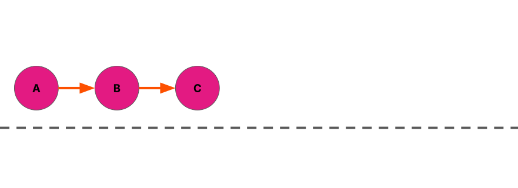
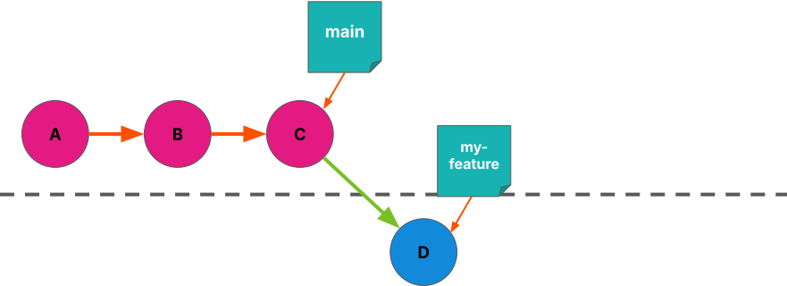
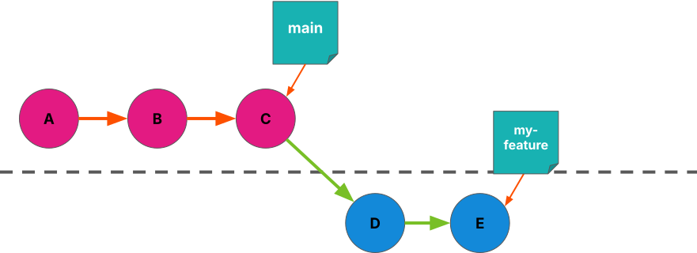
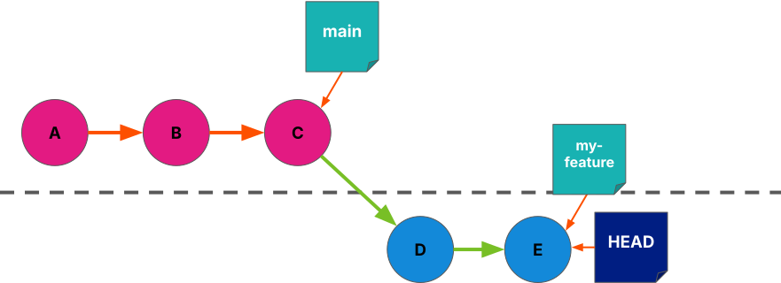
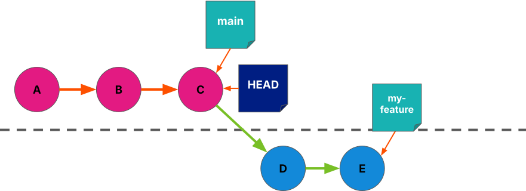
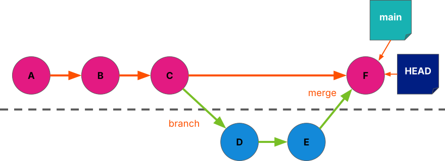
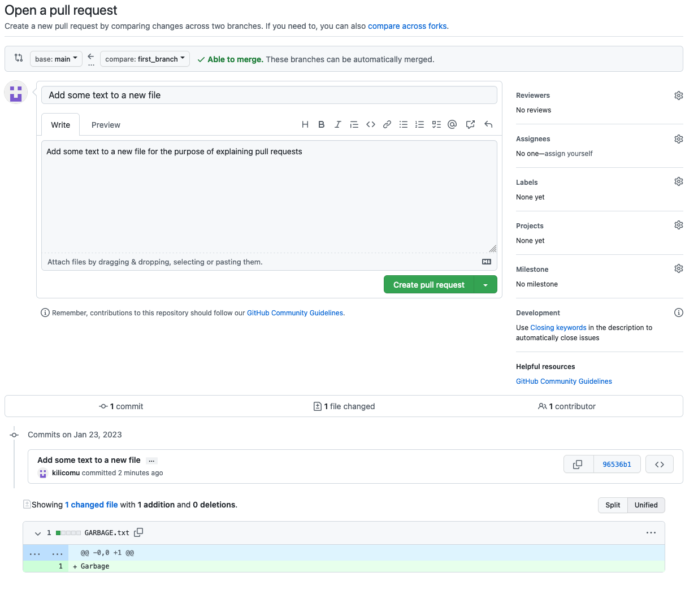
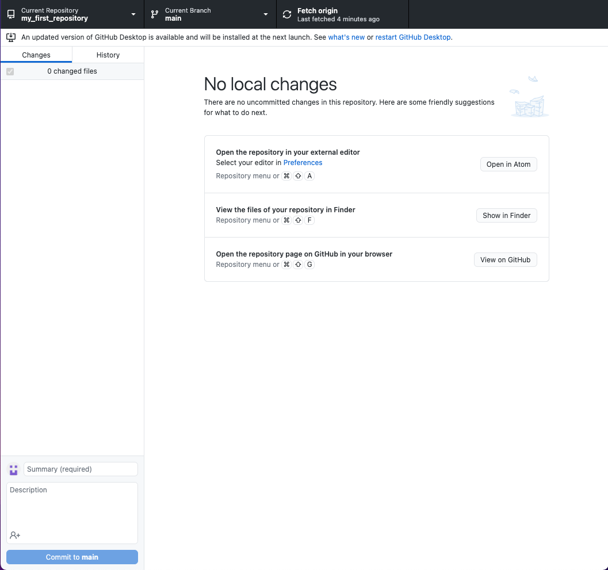
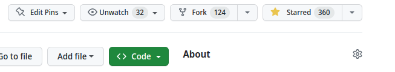
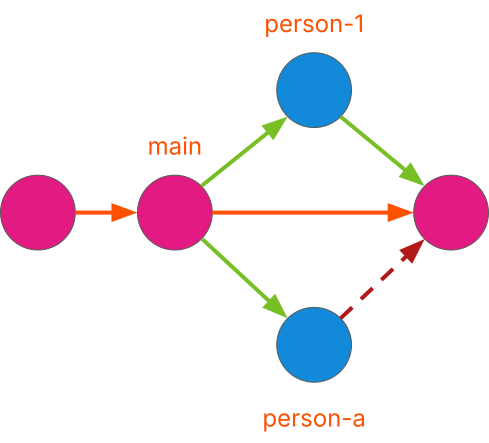

Working with others
Last updated on 2026-04-30 | Edit this page
Overview
Questions
- How do I work on multiple things at the same time?
- How do I work with other people on the same repository?
Objectives
- To understand what a branch is
- To understand how to create branches
- To understand how to merge branches
Branches

So far, we’ve been making a straightforward series of commits

- Branching creates a separate stream of changes within the repository
- Changes on one branch aren’t reflected on another branch, unless you want them to be!
- Branch names are like post-it notes on particular commits


- Branching creates a separate stream of changes within the repository
- Changes on one branch aren’t reflected on another branch, unless you want them to be!
- Branch names are like post-it notes on particular commits

- When we change branch, our working tree is updated to reflect the state of that branch
- git uses the label HEAD to refer to the current branch

We can merge one branch into another, and bring the changes together
Merge commits are special because they have two parent commits — normal commits only have one!
Branches are great for working on new things once you’ve got something working - make changes on a branch knowing that they won’t affect changes on the ‘main’ branch
Branches are great for working together - multiple people can work on different changes without interfering with each other
At some point you will want to bring all of these changes back into one place - this is called a ‘merge’
Git Glossary: Branching
- Branch : a set of changes in your repository, being tracked in parallel to your ‘main’ branch
- Merge : to bring changes from one branch into another
- Conflict : a situation where competing changes have been made to some part of your repository
- Pull Request : a way of reviewing, labelling, and discussing a merge before it takes place
- Fork : make a copy linked to the original repo
The branch currently only resides in our local repository
We can publish the branch to GitHub in the same way we published the main branch at the start of the tutorial:
GUI users can click Publish branch
CLI users can run git push —set-upstream origin sandwiches
Now other people could see your branches when they clone your repository
Add a new file
sandwich.md
- Let’s add a new file: sandwich.md
- We’ll fill it in later!
- Make sure you’re on your new branch (” sandwiches ” rather than ” main “)
- Add the new file, and commit it with a useful message
Working On Branches
Switch back to your main branch. What do you notice?
CLI users:
git switch main(note no--createflag!)CLI users: try
git switch m<tab>Have a look in your file explorer / finder / directory listing in your terminal in between switching branches
Git is keeping track of changes to these branches separately
Files that only exist on one branch will not be visible to you if you have switched away from that branch
If we now want our main branch to reflect changes made on
sandwiches, we need to mergesandwichesintomain-
Before we do this, we can review the changes using a
Pull Request- Slight misnomer from Github here, we’re really requesting to merge branches. Oh well, there are two hard problems in computer science…
Creating A Pull Request
- Navigate to
https://github.com/<username>/<repo-name> - Select the
Pull requeststab - Select
New pull request - We need to select two branches to be compared for a merge - we want
to set
mainas our base branch (the branch into which changes will be merged) andsandwichesas the compare branch, the branch from which changes will be taken - GitHub will show us some information about the changes that we are looking to merge
- With these branches correctly selected, select
Create pull request

{alt=“GitHub screenshot showing”Open a pull request” page”}- Now we can add a title and formatted description of the changes to make it easy for us and others to understand the changes to be merged
- PRs are a good opportunity for you to describe the changes to yourself, review them, and make sure you are happy with them, before merging them with your main branch
- If there are multiple people working on your repository this is a great time for them to have a look at your changes and add any comments they might have!
- Let’s add a nice description and click Create pull request , then see if we can get somebody else to review your changes
Merging A Pull Request
Once you are done experimenting with your Pull Request, select
Merge pull request:This takes the changes from the
comparebranch - the branch you created earlier - and merges them onto thebasebranch - themainbranch of your repositoryIn this case, the changes should be able to be merged automatically
After merging, you can select
Delete branch- we are finished merging the changes and in this case don’t need to keep it!We now need to make sure our local repositories have kept up with the changes that have happened on GitHub…
Keeping Repositories Up To Date - GUI
- We have made some changes in GitHub that we need to reflect in our local repository!
- In the GitHub Desktop app, we can use the ‘Fetch origin’ button to get the latest changes from GitHub
- If we switch back to the main branch after doing so, we will see a Merge commit in the history
- We can also delete our branch that has been merged, since we are finished with it

{alt=“GitHub Desktop showing”Fetch origin” button”}Click this!
Keeping Repositories Up To Date - CLI
git switch main
^ Switch back to our main branch, if we aren’t already on it
git pull
^ Get the changes from GitHub and reflect them in our local repository
git branch -d sandwiches
^ Delete the local copy of sandwiches , as we have finished with it
Collaborating With Others
- Git is distributed — every copy of a repo has all of its history, can make branches, and can pull branches from other copies
- We usually want to have one “official” repo that is the main version
- On Github we can add collaborators to our repos
- Settings > Collaborators > Add People
- But this has to be done by maintainers of the repo
Collaborating With Others
- What if we want to contribute to someone else’s repo?
- Fork : make a copy linked to the original repo
- Github allows us to make PRs from forks into the original without needing to be added as a collaborator
- Only approved people can actually merge them though!

{alt=“Screenshot of GitHub showing”Fork” button”}Introducing Conflicts
- Conflicts happen when something in a file has been changed in more than one place
- Git doesn’t know what you want the file to contain, so you have to help it!
- One way this can happen is when multiple people work on e.g. the same bit of code on their own branches, and you want to merge those branches back together
Conflicting Commits

Conflicting PRs
- Partner up with the person next to you
- Decide who is “person A” and who is “person 1”
Person A
- Fork Person 1’s repo (you might need to rename it!)
- Clone it locally ( Code to get the URL)
- Make a new branch person-A
- Add a filling to sandwich.md and check the box ( [ ] → [x] )
- Commit and push to your fork of the repo
- Open a PR of your person-A branch into Person 1’s main branch — don’t merge yet!
Person 1
- Make a new branch person-1
- Add a different filling to sandwich.md and check the box ( [ ] → [x] )
- Commit and push to your repo
- Open a PR of your person-1 branch into your main branch and merge it — don’t merge yet!
Resolving Conflicts
- We now have two branches to merge onto the main branch!
- Set up a Pull Request for each of these branches
- You should be able to merge the Pull Request for one of these branches without conflicts
- After merging the first one, the second Pull Request should now tell you that there are conflicts to be resolved
- We have to tell Git what we want the conflicting file to look like in order to continue
Resolving Conflicts
- If you select ‘Resolve conflicts’ on the Pull Request, GitHub will show you something like this
- This is git’s conflict syntax - anything above the line of === characters is what that section of the file looks like in the person-1 branch
- Below the line of === characters is what that section of the file looks like on the base branch
- We can choose how we want to resolve the conflict by removing everything we don’t want to keep, including the Git conflict markers!
- Once you are done, select Mark as resolved — you can now Commit merge to resolve the conflicts and continue
- Notice how the checkbox didn’t cause a conflict, even though you both changed it?
- If you merge on the command line, git puts these conflict markers straight into the file and expects you to fix them before you merge
Summary
- Create a branch in a repository, allowing separate streams of changes to be tracked
- Switch between branches in a repository if you need to work on multiple streams of changes simultaneously
- Create pull requests when you want to merge changes from a branch into another branch
- Merge a pull request when you and collaborators are happy with the changes
- Pull changes from GitHub to synchronise your local repository
- Resolve conflicts when there are overlapping changes to some part of your repository
Additional Resources
- Git
- Version Control with Git: Summary and Setup
- Introducing Version Control with Git
- Hello World - GitHub Docs
- Git & Github through GitKraken Client - From Zero to Hero!